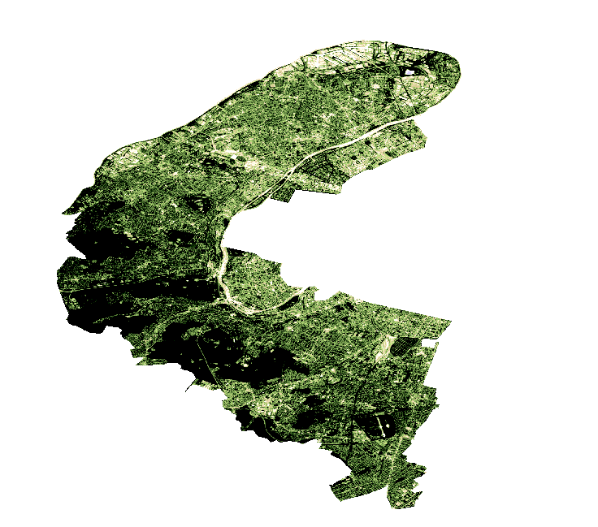
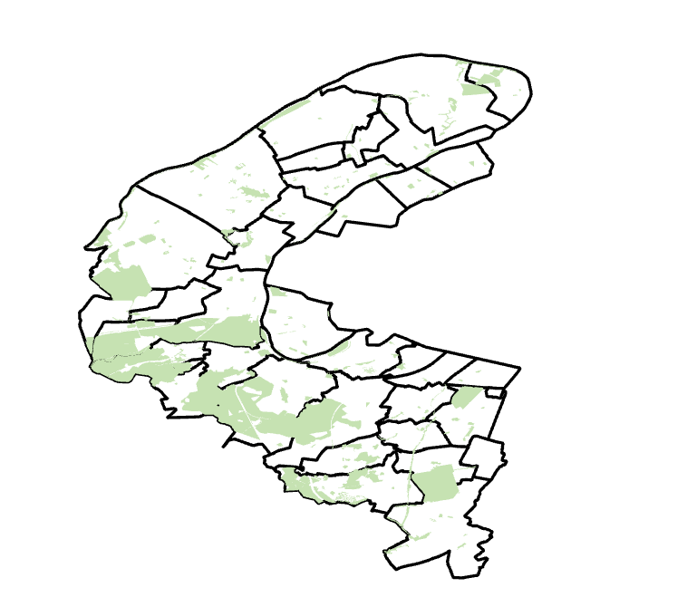

Pour cette étude, nous avons mobilisé trois types de sources afin d’affiner notre analyse spatiale et statistique :
Afin d’identifier l’ensemble des surfaces végétalisées du département des Hauts-de-Seine (92), nous avons exploité des images satellite Sentinel-2 de type NDVI extraites via la plateforme Copernicus Browser.
Le NDVI (Normalized Difference Vegetation Index) : Il s’agit d’un indice de végétation calculé à partir des bandes spectrales du rouge et de l’infrarouge proche. Il permet de mesurer la vigueur et la densité de la végétation : plus l’indice est proche de 1, plus la végétation est importante. Temporalité : Données de 2026. Traitement : Ces données ont subi un géotraitement raster pour isoler les surfaces végétalisées par rapport au milieu urbain .
Couche NDVI découper selon les limites du département :

a) Communes du département
Il s’agit de notre zone d’étude regroupant les 36
communes des Hauts-de-Seine. Extraite de la base Cadastre
Etalab, ces données vectorielles nous ont permis de définir les
limites administratives, de calculer la surface globale de chaque
commune et de réaliser des découpages ainsi que des jointures
attributaires.
b) Espaces naturels
Pour affiner l’analyse, nous avons incorporé un jeu de données recensant
les Espaces Naturels , gérés par la Direction du
Département des Hauts-de-Seine.
L’objéctif est de comparer la couverture végétale brute (issue du
raster) avec les zones officiellement gérées. Source :
Open
Data Hauts-de-Seine, millésime 2021.
Répartition des espaces naturels du département des Hauts-de-Seine :

a) Revenu médian par commune
Données extraites de l’Observatoire des Territoires
(source : Insee/Filosofi, 2021).
Le revenu médian est le niveau de revenu qui partage la population en
deux groupes égaux (50 % gagnent plus, 50 % gagnent moins). Il est
l’indicateur le plus fidèle pour mesurer le niveau de vie réel des
habitants.
b) Dépenses des collectivités par habitant
Jeu de données extrait de l’OFGL (Observatoire des
Finances et de la Gestion Publique Locale), millésime
2024.
Cet indicateur correspond au montant annuel que la collectivité investit
et dépense pour le fonctionnement des services publics par habitant. Il
reflète la richesse budgétaire de la commune.
La combinaison de ces deux sources statistiques nous a permis de classer les communes. Nous avons créé un indice de richesse ou les deux variables sont normalisées entre 1 et 0 selon la formule suivante :
\[\text{Indice de richesse} = \left( \frac{R - R_{min}}{R_{max} - R_{min}} \times 0{,}5 \ + \ \frac{D - D_{min}}{D_{max} - D_{min}} \times 0{,}5 \right) \times 100\]
Cet indice permet de pondérer la richesse directe des ménages avec la capacité d’investissement de leur commune de résidence.
| Commune | Revenu médian (€) | Montant par habitant 2024 (€) |
|---|---|---|
| Asnières-sur-Seine | 28 370 | 1 825.7 |
| Antony | 32 000 | 2 190.8 |
| Bagneux | 21 040 | 2 093.1 |
| Bois-Colombes | 21 040 | 2 137.3 |
| Boulogne-Billancourt | 35 040 | 1 841.4 |
| Bourg-la-Reine | 33 700 | 2 460.1 |
| Châtenay-Malabry | 27 140 | 1 926.8 |
| Châtillon | 30 550 | 2 204.8 |
| Chaville | 32 290 | 1 599.7 |
| Clamart | 29 920 | 2 487.4 |
| Clichy | 22 410 | 2 525.6 |
| Colombes | 25 100 | 2 369.7 |
| Courbevoie | 32 080 | 2 651.1 |
| Fontenay-aux-Roses | 26 990 | 1 782.9 |
| Garches | 36 150 | 2 058.3 |
| Gennevilliers | 18 380 | 3 949.5 |
| Issy-les-Moulineaux | 33 650 | 2 004.9 |
| La Garenne-Colombes | 33 090 | 2 549.3 |
| Le Plessis-Robinson | 31 000 | 4 959.6 |
| Levallois-Perret | 34 500 | 3 109.0 |
| Malakoff | 25 810 | 1 941.8 |
| Marnes-la-Coquette | 41 740 | 810.9 |
| Meudon | 30 680 | 1 941.8 |
| Montrouge | 30 500 | 2 220.3 |
| Nanterre | 21 620 | 2 904.1 |
| Neuilly-sur-Seine | 48 010 | 3 094.4 |
| Puteaux | 30 980 | 4 212.2 |
| Rueil-Malmaison | 32 980 | 2 463.2 |
| Saint-Cloud | 39 760 | 2 129.9 |
| Sceaux | 36 010 | 2 489.2 |
| Sèvres | 33 680 | 1 900.9 |
| Suresnes | 31 810 | 2 389.7 |
| Vanves | 30 770 | 1 834.3 |
| Vaucresson | 41 320 | 2 958.5 |
| Ville-d’Avray | 38 490 | 1 510.9 |
| Villeneuve-la-Garenne | 18 570 | 3 067.0 |